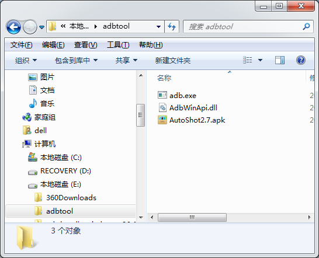
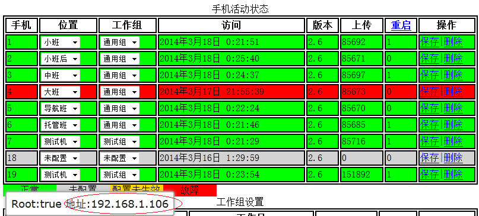
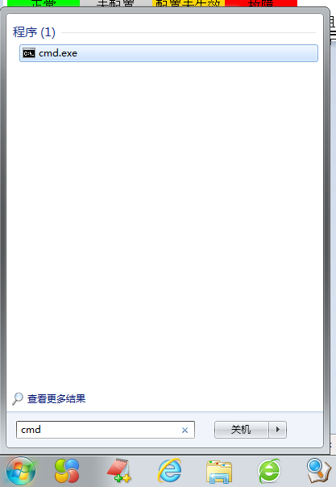
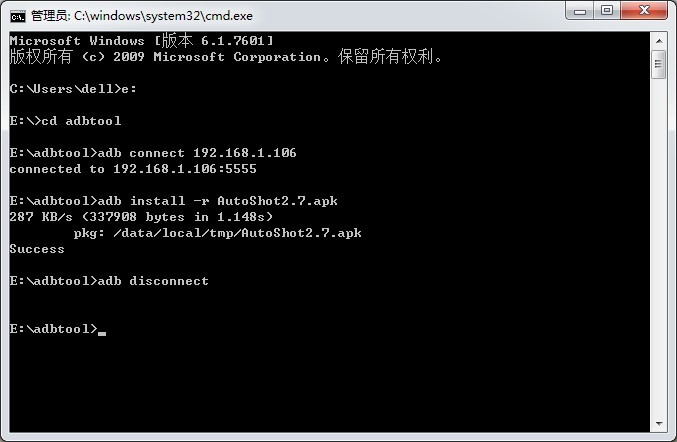

注意：升级只能在和手机所在的小网内执行，既幼儿园内
第一步：进入管理页面,下载adbtool.zip和最新的客户端，解压缩后放入放入一个目录下，如e:\adbtool
第二步：获取手机IP地址：进入管理页面,将鼠标放到要升级的手机上，从弹出的气泡框内得到手机的小网IP地址，如下图红圈内，记下这个地址
第三步：点击开始键，输入cmd，回车打开DOS窗口
第四步：在DOS窗口输入"e:"回车，切换到e盘，输入"cd adbtool"回车,进入adbtool目录
第五步：在DOS窗口输入"adb connect 192.168.1.106"回车，后面的ip地址替换成第二步得到的手机ip，如果显示如下图的字样表示连接手机成功
第六步：在DOS窗口输入"adb install -r AutoShot2.7.apk"回车，后面的名字需替换成实际的文件名，若成功则显示succes，至此升级成功，等待应用被Autoshtdeamon重新拉起。
第七步：在DOS窗口输入"adb disconnect"回车，断开与手机连接。如果有其他手机要升级，获取IP地址后，重复第五步到第七步
